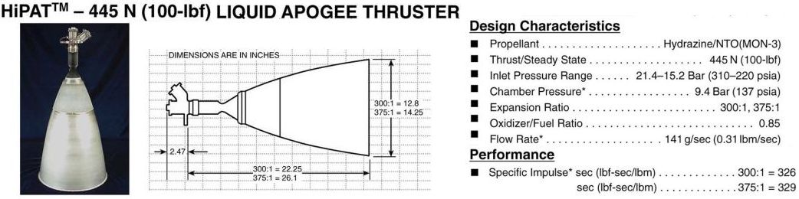

Examples¶
Rocketisp uses a simplified JANNAF Standard approach to calculate delivered specific impulse (Isp) for liquid rocket thrust chambers.
The following examples taken from Space Engine Encyclopedia demonstrate how to use Rocketisp.
Apollo SPS¶
Aerojet AJ10-137 (Apollo Service Module Engine) part of the AJ10 line of Aerojet engines.
The Apollo SPS engine was used to power the Apollo command and service module
The SPS engine was used to place the Apollo spacecraft into and out of lunar orbit, and for mid-course corrections between the Earth and Moon. It also served as a retrorocket to perform the deorbit burn for Earth orbital Apollo flights.
Based on the Apollo BlockII SPS Engine Testing, the performance of the engine was about 314 sec at 100 psia chamber pressure.
With a guess of 15% for fuel film cooling, the RocketIsp model below predicts a delivered Isp of 313.2 seconds.
Note that the operating core mixture ratio was calculated based on maximizing the delivered Isp by using the method set_mr_to_max_ispdel.


"""
Apollo SPS, Aerojet AJ10-137 (Apollo Service Module Engine)
"""
from rocketisp.rocket_isp import RocketThruster
from rocketisp.geometry import Geometry
from rocketisp.stream_tubes import CoreStream
from rocketisp.efficiencies import Efficiencies
# create basic Geometry.
# Use "place-holder" of 1 inch for throat radius... correct later with "scale_Rt_to_Thrust"
geomObj = Geometry(Rthrt=1,
CR=2.5, eps=62.5, pcentBell=72.3,
RupThroat=1.5, RdwnThroat=1.0, RchmConv=1.0, cham_conv_deg=30,
LchmOvrDt=3.10, LchmMin=2.0, LchamberInp=None)
effObj = Efficiencies()
effObj.set_const('ERE', 0.98) # don't know injector details so set effERE=0.98
# It's an ablative chamber, so some FFC (fuel film cooling) is required... guess about 15%
core = CoreStream( geomObj=geomObj, effObj=effObj, pcentFFC=15.0,
oxName='N2O4', fuelName='A50', MRcore=1.6, Pc=100 )
R = RocketThruster(name='Apollo SPS',coreObj=core)
# scale geometry to give 20,500 lbf of thrust for current conditions
R.scale_Rt_to_Thrust( 20500 , Pamb=0.0 )
# figure out best mixture ratio to run the engine.
R.set_mr_to_max_ispdel()
# re-scale geometry to give 20,500 lbf of thrust after MR change
R.scale_Rt_to_Thrust( 20500 , Pamb=0.0 )
R.summ_print()
The resulting summary print is
============================== Apollo SPS ==============================
................................. Geometry .................................
.................................. Input ..................................
cham_conv_deg = 30.00 deg half angle of conical convergent section
CR = 2.5 chamber contraction ratio (Ainj / Athroat)
eps = 62.5 nozzle area ratio (Aexit / Athroat)
LchamberInp = None in user input value of chamber length (will override all other entries)
LchmMin = 2.000 in minimum chamber length (will override LchmOvrDt)
(5.080 cm, 0.167 ft)
LchmOvrDt = 3.1 ratio of chamber length to throat diameter (Lcham / Dthrt)
LnozInp = None in user input nozzle length (will override pcentBell)
pcentBell = 72.3 nozzle percent bell (Lnoz / L_15deg_cone)
RchmConv = 1 radius of curvature at start of convergent section (Rconv / Rthrt)
RdwnThroat = 1 radius of curvature just downstream of throat (Rdownstream / Rthrt)
Rthrt = 5.971 in throat radius
(15.166 cm, 0.498 ft)
RupThroat = 1.5 radius of curvature just upstream of throat (Rupstream / Rthrt)
............................................................................
............................... Output ....................................
Ainj = 279.987 in**2 area of injector
(1806.367 cm**2)
At = 111.995 in**2 throat area
(722.547 cm**2)
Dexit = 94.405 in nozzle exit diameter
(239.788 cm, 7.867 ft)
Dinj = 18.881 in diameter of injector
(47.958 cm, 1.573 ft)
Dthrt = 11.941 in throat diameter
(30.331 cm, 0.995 ft)
entrance_angle = 36.79 deg nozzle initial expansion angle
exit_angle = 9.34 deg nozzle exit angle
Lcham_conv = 10.009 in length of convergent section of chamber
(25.424 cm, 0.834 ft)
Lcham_cyl = 27.009 in length of cylindrical section of chamber
(68.602 cm, 2.251 ft)
Lnoz = 111.254 in nozzle length
(282.586 cm, 9.271 ft)
Ltotal = 148.273 in nozzle + chamber length
(376.613 cm, 12.356 ft)
Rinj = 9.440 in radius of injector
(23.979 cm, 0.787 ft)
Vcham = 9460.8 in**3 approximate chamber volume
(155034.6 cm**3)
............................................................................
........................ N2O4/A50 Core Stream Tube .........................
.................................. Input ..................................
adjCstarODE = 1 multiplier on NASA CEA code value of cstar ODE (default is 1.0)
adjIspIdeal = 1 multiplier on NASA CEA code value of Isp ODE (default is 1.0)
CdThroat = 0.990299 Cd of throat (RocketThruster object may override)
((MLP fit))
fuelName = A50 name of fuel (e.g. MMH, LH2)
ignore_noz_sep = 0 flag to force nozzle flow separation to be ignored (USE WITH CAUTION)
MRcore = 1.87985 mixture ratio of core flow (ox flow rate / fuel flow rate)
oxName = N2O4 name of oxidizer (e.g. N2O4, LOX)
Pamb = 0.00 psia ambient pressure (for example sea level is 14.7 psia)
(0.00 MPa, 0.00 atm, 0.00 bar)
Pc = 100.0 psia chamber pressure
(0.69 MPa, 6.80 atm, 6.89 bar)
............................................................................
................................. Output ..................................
CfAmbDel = 1.83044 delivered ambient thrust coefficient
CfVacDel = 1.83044 delivered vacuum thrust coefficient
CfVacIdeal = 1.95937 ideal vacuum thrust coefficient
cstarERE = 5534.6 ft/s delivered core cstar
(1686.9 m/s)
cstarODE = 5647.5 ft/s core ideal cstar
(1721.4 m/s)
FvacBarrier = 2691.2 lbf vacuum thrust due to barrier stream tube
(11971.1 N)
FvacCore = 17808.8 lbf vacuum thrust due to core stream tube
(79217.4 N)
FvacTotal = 20500.0 lbf total vacuum thrust
(91188.5 N)
gammaChm = 1.13146 core gas ratio of specific heats (Cp/Cv)
IspDel = 313.18 sec <=== thruster delivered vacuum Isp ===>
(3071.29 N-sec/kg, 3.07 km/sec)
IspDel_core = 320.87 sec delivered Isp of core stream tube
(3146.66 N-sec/kg, 3.15 km/sec)
IspODE = 343.93 sec core one dimensional equilibrium Isp
(3372.79 N-sec/kg, 3.37 km/sec)
IspODF = 316.89 sec core frozen Isp
(3107.63 N-sec/kg, 3.11 km/sec)
IspODK = 333.56 sec core one dimensional kinetic Isp
(3271.15 N-sec/kg, 3.27 km/sec)
MRthruster = 1.59787 total thruster mixture ratio')
MWchm = 21.691 g/gmole core gas molecular weight
Pexit = 0.1179 psia nozzle exit pressure
(0.00 MPa, 0.01 atm, 0.01 bar)
TcODE = 5606.3 degR ideal core gas temperature
(3114.6 degK, 2841.4 degC, 5146.6 degF)
wdotFl = 25.196 lbm/s total fuel flow rate
(11.429 kg/s)
wdotOx = 40.260 lbm/s total oxidizer flow rate
(18.262 kg/s)
wdotTot = 65.457 lbm/s total propellant flow rate (ox+fuel)
(29.691 kg/s)
..At Injector Face..
wdotFl_cInit = 21.417 lbm/s initial core fuel flow rate (before any entrainment)
(9.715 kg/s)
wdotFlFFC = 3.779 lbm/s fuel film coolant flow rate injected at perimeter
(1.714 kg/s)
wdotTot_cInit = 61.677 lbm/s initial core total flow rate (before any entrainment)
(27.976 kg/s)
..After Entrainment..
wdotFl_b = 5.924 lbm/s barrier fuel flow rate (FFC + entrained)
(2.687 kg/s)
wdotFl_c = 19.272 lbm/s final core fuel flow rate (injected - entrained)
(8.742 kg/s)
wdotOx_b = 4.031 lbm/s barrier oxidizer flow rate (all entrained)
(1.829 kg/s)
wdotOx_c = 36.229 lbm/s final core oxidizer flow rate (injected - entrained)
(16.433 kg/s)
wdotTot_b = 9.955 lbm/s total barrier propellant flow rate (includes entrained)
(4.516 kg/s)
wdotTot_c = 55.502 lbm/s total final core propellant flow rate (injected - entrained)
(25.175 kg/s)
............................................................................
Efficiencies
Output
Isp = 0.91061 Overall Isp Efficiency
Noz = 0.95199 Nozzle Efficiency
ERE = 0.98000 (constant) Energy Release Efficiency of Chamber
FFC = 0.97605 (barrier calc) Fuel Film Cooling Efficiency of Chamber
..Nozzle..
Div = 0.98851 (simple fit eps=62.5, %bell=72.3) Divergence Efficiency of Nozzle
Kin = 0.96986 (MLP fit) Kinetic Efficiency of Nozzle
BL = 0.99298 (MLP fit) Boundary Layer Efficiency of Nozzle
Ignored Efficiencies
TP: Two Phase Efficiency of Nozzle
........................... Barrier Stream Tube ............................
.................................. Input ..................................
ko = 0.035 entrainment constant (typical value is 0.035, range from 0.03 to 0.06)
pcentFFC = 15 percent fuel film cooling ( FFC flowrate / total fuel flowrate)
............................................................................
................................. Output ..................................
cstarERE_b = 4988.4 ft/s delivered cstar
(1520.5 m/s)
cstarODE_b = 5090.2 ft/s ideal equilibrium cstar
(1551.5 m/s)
fracKin_b = 0 fraction of kinetic completion in barrier
IspDel_b = 270.33 sec delivered vacuum barrier Isp
(2651.07 N-sec/kg, 2.65 km/sec)
IspODE_b = 294.85 sec. ideal equilibrium barrier Isp
IspODF_b = 281.03 sec ideal frozen barrier Isp
(2755.95 N-sec/kg, 2.76 km/sec)
IspODK_b = 281.03 sec vacuum kinetic Isp of barrier
(2755.95 N-sec/kg, 2.76 km/sec)
MRbarrier = 0.680508 barrier mixture ratio
MRwall = 0.253152 mixture ratio at wall
TcODE_b = 3453.4 degR average ideal ODE temperature of barrier gas
(1918.6 degK, 1645.4 degC, 2993.7 degF)
Twallgas = 2149.3 degR temperature of gas at wall
(1194.1 degK, 920.9 degC, 1689.6 degF)
WentrOvWcool = 1.63403 ratio of entrained flow rate to FFC flow rate
............................................................................
R-4D Optimum MR¶
As an exercise in finding the optimum mixture ratio at which to operate a thruster, use the Aerojet HiPAT R-4D Engine shown below, as an example.
The R-4D was originally developed for the reaction control systems for the Apollo Service Module and Lunar Excursion Module. The HiPAT is the fifth generation of the R-4D 100 lbf thrust class of liquid bipropellant engines. It performs orbit-raising maneuvers for many of the world’s communication satellite platforms, including Astrium’s Eurostar 3000, Boeing Space Systems’ 702HP, MELCO’s DS-2000 and Loral’s LS-1300. The R-4D also has played critical roles in NASA missions such as Cassini’s orbit insertion of Saturn.
According to the High Pressure Bipropellant Engine System Study the Aerojet HiPAT R-4D engine uses 30% fuel film cooling (FFC) and operates at a mixture ratio of 0.85 (Note that a newer version of the R-4D has been developed that operates at a nominal 1.0 mixture ratio, so presumably less FFC)
The objective of this exercise is to model a 100 lbf N2O4/N2H4 engine with 30% FFC, a large 375:1 nozzle expansion ratio and discover the mixture ratio for maximizing delivered vacuum Isp.
The following code sets up a model of the Aerojet HiPAT R-4D Engine and iterates through a range of core stream-tube mixture ratios. RocketIsp will calculate the overall thruster mixture ratio and delivered Isp.
Because we know little of the internal thruster geometry, the method scale_Rt_to_Thrust will set the vacuum thrust to 100 lbf at each iteration. The only specific geometry parameter is the nozzle area ratio of 375:1. The rest of the geometry is left to scale “appropriately”.
import matplotlib.pyplot as plt
import numpy as np
from rocketisp.geometry import Geometry
from rocketisp.efficiencies import Efficiencies
from rocketisp.stream_tubes import CoreStream
from rocketisp.rocket_isp import RocketThruster
# create CoreStream with area ratio=375:1, Pc=137, FFC=30% and effERE=0.99
C = CoreStream( geomObj=Geometry(eps=375),
effObj=Efficiencies(ERE=0.99), pcentFFC=30,
oxName='N2O4', fuelName='N2H4', MRcore=1.2,
Pc=137, Pamb=0)
# instantiate RocketThruster
R = RocketThruster(name='100 lbf Aerojet HiPAT R-4D', coreObj=C)
ispodeL = [] # list of IspODE (one-dimensional equilibrium)
ispodkL = [] # list of IspODK (one-dimensional kinetic)
ispdelL = [] # list of IspDel (delivered Isp)
mrnetL = [] # list of MRthruster (net mixture ratio of core and barrier)
mrcoreL = [] # list of MRcore (core stream tube mixture ratio)
for MRcore in np.linspace( 0.9, 1.9, num=60 ):
C.reset_attr( 'MRcore', MRcore )
R.scale_Rt_to_Thrust( 100 , Pamb=0.0 )
ispodeL.append( C('IspODE') )
ispodkL.append( C('IspODK') )
ispdelL.append( C('IspDel') )
mrnetL.append( C('MRthruster') )
mrcoreL.append( C('MRcore') )
#print( 'MRcore/MReng=%g/%g'%(MRcore, C('MRthruster')), ' effNoz=%g'%C.effObj('Noz'), ' effDiv=%g'%C.effObj('Div'), ' effBL=%g'%C.effObj('BL') )
fig, ax = plt.subplots( figsize=(6,5) )
plt.plot(mrcoreL, ispodeL, label='IspODE', linewidth=3)
plt.plot(mrcoreL, ispodkL, label='IspODK', linewidth=3)
plt.plot(mrnetL, ispdelL, label='IspDel', linewidth=3)
plt.legend()
plt.grid()
plt.ylabel('Isp (sec)')
plt.xlabel('Mixture Ratio\n(MRcore for IspODE and IspODK, MRengine for IspDel)')
imL = sorted([(i,m, mc) for i,m,mc in zip(ispdelL, mrnetL, mrcoreL)])
subtitle = 'max IspDel=%.1f at MRthruster=%.2f, MRcore=%.2f'%imL[-1]
title = '%s/%s Area Ratio=%g:1 %%Bell=%g %%FFC=%g\n'%( C.oxName, C.fuelName, C.geomObj.eps,
C.geomObj.pcentBell, C.barrierObj.pcentFFC ) + subtitle
plt.title( title )
fig.tight_layout()
plt.savefig( 'HiPAT_NTO_N2H4_IspDel.png' )
plt.show()
The above script results in the following chart.
Notice that despite the maximum IspODE mixture ratio for the core optimizing at above 1.4, and the maximum IspODK mixture ratio at about 1.2, the maximum Isp MR for the R-4D with 30% FFC is right about at its published operating point of 0.85 (RocketIsp predicts a maximum at 0.88, although the peak is pretty flat.)

The published IspDel for the 375:1 nozzle is 329. The above RocketIsp chart shows just over 325… about a 1% difference.
The output below shows the thruster efficiencies calculated by RocketIsp at the IspDel MR peak of 0.88. The overall Isp efficiency is 92.6% including the assumed chamber efficiency of 99%. The 1% Isp difference could perhaps be accounted for with more sophisticated analysis of the individual efficiencies.
============================== 100 lbf Aerojet HiPAT R-4D ==============================
................................. Geometry .................................
.................................. Input ..................................
cham_conv_deg = 30.00 deg half angle of conical convergent section
CR = 2.5 chamber contraction ratio (Ainj / Athroat)
eps = 375 nozzle area ratio (Aexit / Athroat)
LchamberInp = None in user input value of chamber length (will override all other entries)
LchmMin = 1.000 in minimum chamber length (will override LchmOvrDt)
(2.540 cm, 0.083 ft)
LchmOvrDt = 3 ratio of chamber length to throat diameter (Lcham / Dthrt)
LnozInp = None in user input nozzle length (will override pcentBell)
pcentBell = 80 nozzle percent bell (Lnoz / L_15deg_cone)
RchmConv = 1 radius of curvature at start of convergent section (Rconv / Rthrt)
RdwnThroat = 1 radius of curvature just downstream of throat (Rdownstream / Rthrt)
Rthrt = 0.357 in throat radius
(0.906 cm, 0.030 ft)
RupThroat = 1.5 radius of curvature just upstream of throat (Rupstream / Rthrt)
............................................................................
............................... Output ....................................
Ainj = 1.000 in**2 area of injector
(6.449 cm**2)
At = 0.400 in**2 throat area
(2.579 cm**2)
Dexit = 13.817 in nozzle exit diameter
(35.094 cm, 1.151 ft)
Dinj = 1.128 in diameter of injector
(2.865 cm, 0.094 ft)
Dthrt = 0.713 in throat diameter
(1.812 cm, 0.059 ft)
entrance_angle = 39.79 deg nozzle initial expansion angle
exit_angle = 7.65 deg nozzle exit angle
Lcham_conv = 0.598 in length of convergent section of chamber
(1.519 cm, 0.050 ft)
Lcham_cyl = 1.542 in length of cylindrical section of chamber
(3.918 cm, 0.129 ft)
Lnoz = 19.561 in nozzle length
(49.684 cm, 1.630 ft)
Ltotal = 21.701 in nozzle + chamber length
(55.121 cm, 1.808 ft)
Rinj = 0.564 in radius of injector
(1.433 cm, 0.047 ft)
Vcham = 1.9 in**3 approximate chamber volume
(31.9 cm**3)
............................................................................
........................ N2O4/N2H4 Core Stream Tube ........................
.................................. Input ..................................
adjCstarODE = 1 multiplier on NASA CEA code value of cstar ODE (default is 1.0)
adjIspIdeal = 1 multiplier on NASA CEA code value of Isp ODE (default is 1.0)
CdThroat = 0.985275 Cd of throat (RocketThruster object may override)
((MLP fit))
fuelName = N2H4 name of fuel (e.g. MMH, LH2)
ignore_noz_sep = 0 flag to force nozzle flow separation to be ignored (USE WITH CAUTION)
MRcore = 1.26 mixture ratio of core flow (ox flow rate / fuel flow rate)
oxName = N2O4 name of oxidizer (e.g. N2O4, LOX)
Pamb = 0.00 psia ambient pressure (for example sea level is 14.7 psia)
(0.00 MPa, 0.00 atm, 0.00 bar)
Pc = 137.0 psia chamber pressure
(0.94 MPa, 9.32 atm, 9.45 bar)
............................................................................
................................. Output ..................................
CfAmbDel = 1.82564 delivered ambient thrust coefficient
CfVacDel = 1.82564 delivered vacuum thrust coefficient
CfVacIdeal = 2.01252 ideal vacuum thrust coefficient
cstarERE = 5729.7 ft/s delivered core cstar
(1746.4 m/s)
cstarODE = 5787.6 ft/s core ideal cstar
(1764.1 m/s)
FvacBarrier = 40.8 lbf vacuum thrust due to barrier stream tube
(181.4 N)
FvacCore = 59.2 lbf vacuum thrust due to core stream tube
(263.5 N)
FvacTotal = 100.0 lbf total vacuum thrust
(444.8 N)
gammaChm = 1.13912 core gas ratio of specific heats (Cp/Cv)
IspDel = 324.09 sec <=== thruster delivered vacuum Isp ===>
(3178.27 N-sec/kg, 3.18 km/sec)
IspDel_core = 335.21 sec delivered Isp of core stream tube
(3287.30 N-sec/kg, 3.29 km/sec)
IspODE = 362.02 sec core one dimensional equilibrium Isp
(3550.20 N-sec/kg, 3.55 km/sec)
IspODF = 337.52 sec core frozen Isp
(3309.90 N-sec/kg, 3.31 km/sec)
IspODK = 346.44 sec core one dimensional kinetic Isp
(3397.42 N-sec/kg, 3.40 km/sec)
MRthruster = 0.882 total thruster mixture ratio')
MWchm = 20.222 g/gmole core gas molecular weight
Pexit = 0.0124 psia nozzle exit pressure
(0.00 MPa, 0.00 atm, 0.00 bar)
TcODE = 5521.3 degR ideal core gas temperature
(3067.4 degK, 2794.2 degC, 5061.6 degF)
wdotFl = 0.164 lbm/s total fuel flow rate
(0.074 kg/s)
wdotOx = 0.145 lbm/s total oxidizer flow rate
(0.066 kg/s)
wdotTot = 0.309 lbm/s total propellant flow rate (ox+fuel)
(0.140 kg/s)
..At Injector Face..
wdotFl_cInit = 0.115 lbm/s initial core fuel flow rate (before any entrainment)
(0.052 kg/s)
wdotFlFFC = 0.049 lbm/s fuel film coolant flow rate injected at perimeter
(0.022 kg/s)
wdotTot_cInit = 0.259 lbm/s initial core total flow rate (before any entrainment)
(0.118 kg/s)
..After Entrainment..
wdotFl_b = 0.086 lbm/s barrier fuel flow rate (FFC + entrained)
(0.039 kg/s)
wdotFl_c = 0.078 lbm/s final core fuel flow rate (injected - entrained)
(0.035 kg/s)
wdotOx_b = 0.046 lbm/s barrier oxidizer flow rate (all entrained)
(0.021 kg/s)
wdotOx_c = 0.099 lbm/s final core oxidizer flow rate (injected - entrained)
(0.045 kg/s)
wdotTot_b = 0.132 lbm/s total barrier propellant flow rate (includes entrained)
(0.060 kg/s)
wdotTot_c = 0.177 lbm/s total final core propellant flow rate (injected - entrained)
(0.080 kg/s)
............................................................................
Efficiencies
Output
Isp = 0.89524 Overall Isp Efficiency
Noz = 0.93530 Nozzle Efficiency
ERE = 0.99000 (constant) Energy Release Efficiency of Chamber
FFC = 0.96683 (barrier calc) Fuel Film Cooling Efficiency of Chamber
..Nozzle..
Div = 0.99403 (simple fit eps=375, %bell=80) Divergence Efficiency of Nozzle
Kin = 0.95697 (MLP fit) Kinetic Efficiency of Nozzle
BL = 0.98323 (MLP fit) Boundary Layer Efficiency of Nozzle
Ignored Efficiencies
TP: Two Phase Efficiency of Nozzle
........................... Barrier Stream Tube ............................
.................................. Input ..................................
ko = 0.035 entrainment constant (typical value is 0.035, range from 0.03 to 0.06)
pcentFFC = 30 percent fuel film cooling ( FFC flowrate / total fuel flowrate)
............................................................................
................................. Output ..................................
cstarERE_b = 5490.6 ft/s delivered cstar
(1673.5 m/s)
cstarODE_b = 5546.1 ft/s ideal equilibrium cstar
(1690.5 m/s)
fracKin_b = 0.0628378 fraction of kinetic completion in barrier
IspDel_b = 309.20 sec delivered vacuum barrier Isp
(3032.17 N-sec/kg, 3.03 km/sec)
IspODE_b = 321.837 sec. ideal equilibrium barrier Isp
IspODF_b = 319.40 sec ideal frozen barrier Isp
(3132.24 N-sec/kg, 3.13 km/sec)
IspODK_b = 319.55 sec vacuum kinetic Isp of barrier
(3133.74 N-sec/kg, 3.13 km/sec)
MRbarrier = 0.537454 barrier mixture ratio
MRwall = 0.215753 mixture ratio at wall
TcODE_b = 4153.2 degR average ideal ODE temperature of barrier gas
(2307.3 degK, 2034.2 degC, 3693.5 degF)
Twallgas = 2774.3 degR temperature of gas at wall
(1541.3 degK, 1268.1 degC, 2314.6 degF)
WentrOvWcool = 1.68107 ratio of entrained flow rate to FFC flow rate
............................................................................